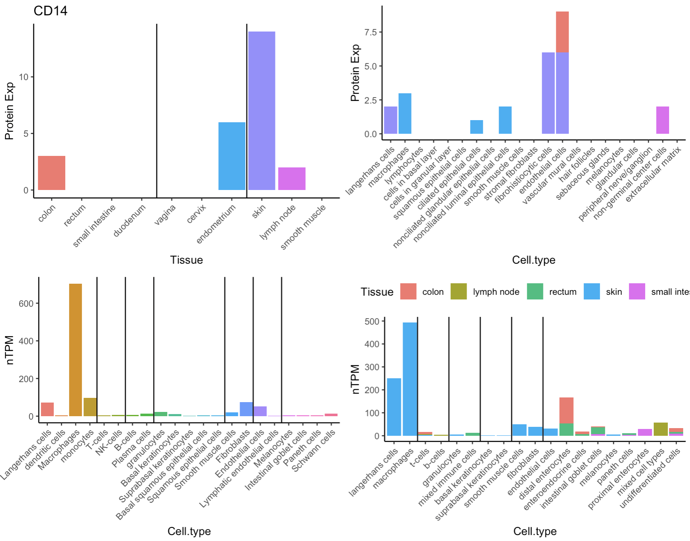
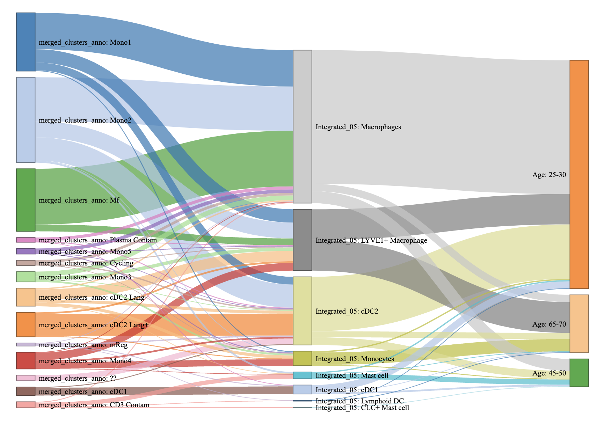
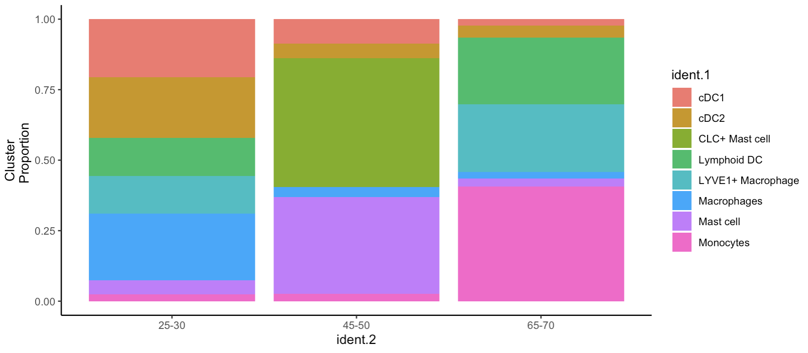
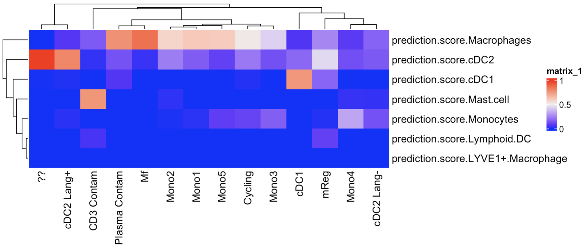
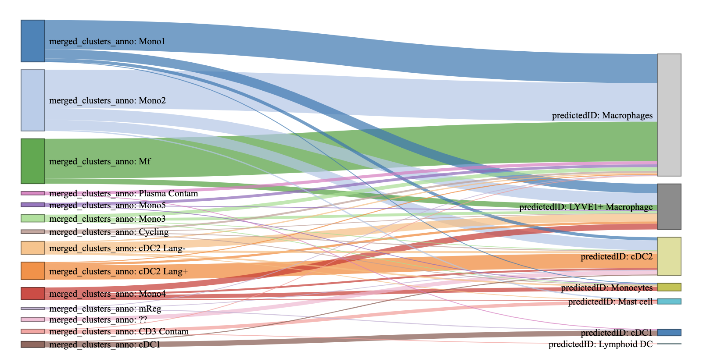

Last updated: 2024-11-28
Checks: 7 0
Knit directory: CVR-site/
This reproducible R Markdown analysis was created with workflowr (version 1.7.1). The Checks tab describes the reproducibility checks that were applied when the results were created. The Past versions tab lists the development history.
Great! Since the R Markdown file has been committed to the Git repository, you know the exact version of the code that produced these results.
Great job! The global environment was empty. Objects defined in the global environment can affect the analysis in your R Markdown file in unknown ways. For reproduciblity it’s best to always run the code in an empty environment.
The command set.seed(20241002) was run prior to running
the code in the R Markdown file. Setting a seed ensures that any results
that rely on randomness, e.g. subsampling or permutations, are
reproducible.
Great job! Recording the operating system, R version, and package versions is critical for reproducibility.
Nice! There were no cached chunks for this analysis, so you can be confident that you successfully produced the results during this run.
Great job! Using relative paths to the files within your workflowr project makes it easier to run your code on other machines.
Great! You are using Git for version control. Tracking code development and connecting the code version to the results is critical for reproducibility.
The results in this page were generated with repository version 8caac82. See the Past versions tab to see a history of the changes made to the R Markdown and HTML files.
Note that you need to be careful to ensure that all relevant files for
the analysis have been committed to Git prior to generating the results
(you can use wflow_publish or
wflow_git_commit). workflowr only checks the R Markdown
file, but you know if there are other scripts or data files that it
depends on. Below is the status of the Git repository when the results
were generated:
Ignored files:
Ignored: .DS_Store
Ignored: .RData
Ignored: .Rhistory
Ignored: .Rproj.user/
Ignored: analysis/.DS_Store
Ignored: data/.DS_Store
Ignored: data/merged_Martin_GCA-SB-HealthyAdult_20220119_annotated_TO.rds
Ignored: data/rmds/.DS_Store
Ignored: static/
Note that any generated files, e.g. HTML, png, CSS, etc., are not included in this status report because it is ok for generated content to have uncommitted changes.
These are the previous versions of the repository in which changes were
made to the R Markdown (analysis/functions.Rmd) and HTML
(docs/functions.html) files. If you’ve configured a remote
Git repository (see ?wflow_git_remote), click on the
hyperlinks in the table below to view the files as they were in that
past version.
| File | Version | Author | Date | Message |
|---|---|---|---|---|
| html | 63bccfd | DrThomasOneil | 2024-11-28 | Build site. |
| html | 73f1db3 | DrThomasOneil | 2024-11-28 | Build site. |
| Rmd | 67bed13 | DrThomasOneil | 2024-11-28 | Update |
| html | 293911d | DrThomasOneil | 2024-11-28 | Build site. |
| Rmd | e4fbf6f | DrThomasOneil | 2024-11-28 | Update |
| html | e0dfc4f | DrThomasOneil | 2024-11-27 | Update functions.html |
| html | a599253 | DrThomasOneil | 2024-11-27 | Build site. |
| Rmd | 8c21c33 | DrThomasOneil | 2024-11-27 | Update |
| html | e5e0b02 | DrThomasOneil | 2024-11-26 | Update functions.html |
| html | 184aabc | DrThomasOneil | 2024-11-26 | Update functions.html |
| html | 110f7c3 | DrThomasOneil | 2024-11-26 | Update functions.html |
| html | 310b372 | DrThomasOneil | 2024-11-26 | Update functions.html |
| html | 38685a2 | DrThomasOneil | 2024-11-26 | Update functions.html |
| html | 39c4729 | DrThomasOneil | 2024-11-26 | Update functions.html |
| html | 14d484d | DrThomasOneil | 2024-11-26 | Update functions.html |
| html | e4aa21a | DrThomasOneil | 2024-11-26 | Update functions.html |
| html | fe35d25 | DrThomasOneil | 2024-11-26 | Build site. |
| Rmd | 9f52153 | DrThomasOneil | 2024-11-26 | Update |
| html | c0363a3 | DrThomasOneil | 2024-11-26 | Build site. |
| Rmd | c380300 | DrThomasOneil | 2024-11-26 | Update |
| html | 1b209b4 | DrThomasOneil | 2024-11-22 | Build site. |
| html | 5217986 | DrThomasOneil | 2024-11-22 | Build site. |
| html | 6e58807 | DrThomasOneil | 2024-11-22 | Build site. |
| Rmd | b5edf53 | DrThomasOneil | 2024-11-22 | Update |
| html | ec67e7c | DrThomasOneil | 2024-11-22 | Build site. |
| html | e0991a3 | DrThomasOneil | 2024-11-22 | Build site. |
| html | d35071d | DrThomasOneil | 2024-11-22 | Build site. |
| html | 7760ddb | DrThomasOneil | 2024-11-22 | Build site. |
| html | 2d957a5 | DrThomasOneil | 2024-11-22 | Build site. |
| html | 38104b4 | DrThomasOneil | 2024-11-22 | Build site. |
| html | e9a36e0 | DrThomasOneil | 2024-11-22 | Build site. |
| html | 566e205 | DrThomasOneil | 2024-11-22 | Build site. |
| html | 50a6660 | DrThomasOneil | 2024-11-11 | Build site. |
| html | 4ae72fd | DrThomasOneil | 2024-11-11 | Build site. |
| html | e13bbf0 | DrThomasOneil | 2024-11-11 | Build site. |
| html | 274b373 | DrThomasOneil | 2024-10-16 | Build site. |
| html | 2b49a4e | DrThomasOneil | 2024-10-16 | Build site. |
| html | f1b7785 | DrThomasOneil | 2024-10-16 | Build site. |
| html | 55cb641 | DrThomasOneil | 2024-10-11 | Build site. |
| html | 14740d6 | DrThomasOneil | 2024-10-11 | Build site. |
| html | d05f962 | DrThomasOneil | 2024-10-11 | Build site. |
| html | e15a979 | DrThomasOneil | 2024-10-11 | Build site. |
| html | 5ee2f33 | DrThomasOneil | 2024-10-11 | update func |
| Rmd | fc5a59d | DrThomasOneil | 2024-10-11 | Update |
| html | ccb4100 | DrThomasOneil | 2024-10-11 | Build site. |
| html | c6a226c | DrThomasOneil | 2024-10-11 | Build site. |
| Rmd | aa8d999 | DrThomasOneil | 2024-10-11 | Update |
Here I’ll drop custom functions that I generate here with instructions and example output.
Functions can be loaded using:
source("https://raw.githubusercontent.com/DrThomasOneil/CVR-site/refs/heads/master/data/.functions.R")Organise by category: setup, tools, plotting, analysis, etc.
This function runs automatically. It’ll load the packages that I typically use, which just saves me having to load packages manually everytime.
loadPack <- function() {
library(cli)
cat("\n--------------------------------------\n")
cat(style_bold(col_magenta("\n***Installing General Packages***\n\n")))
not <- c(); not2 <- c()
packages1 <- c("ggplot2", "rstudioapi", "rmarkdown", 'tidyr', "cli", "knitr", "dplyr", "Seurat","SeuratObject",
"DoubletFinder", "SeuratDisk", "flipPlots",'stringr', "crayon","Matrix", "cowplot", 'scater', "BiocParallel",
"ComplexHeatmap","readxl", "ggpubr")#, "Test")
for (i in 1:length(packages1)){
if(requireNamespace(packages1[i], quietly = TRUE)==F) {
cat(paste(style_bold(col_red(packages1[i])), "has not been installed\n"))
not <- c(not,i)
} else {
suppressWarnings(suppressMessages(library(as.character(packages1[i]), character.only = TRUE)))
cat(col_yellow(packages1[i]), "is loaded!\n")
}
}
cat("\n--------------------------------------\n")
if (length(not) > 0){
cat(style_bold(bg_red("\n **IMPORTANT** ")),
style_bold(col_yellow("\n\nYou need to install: \n")),
paste(paste(c(packages1[not]), collapse=", ")),
"\n\n--------------------------------------",
"\n\n Use:\n - install.packages(),\n - BiocManager::install() or, \n - use Google to find installation instructions.\n\n", style_bold(col_green("Then run this function again!\n\n")))
} else {
cat("",col_green(style_bold("\n All packages are loaded!\n\n Happy Coding! :)\n\n")))
}
}loadPack()
--------------------------------------
***Installing General Packages***
ggplot2 is loaded!
rstudioapi is loaded!
rmarkdown is loaded!
tidyr is loaded!
cli is loaded!
knitr is loaded!
dplyr is loaded!
Seurat is loaded!
SeuratObject is loaded!
DoubletFinder has not been installedRegistered S3 method overwritten by 'SeuratDisk':
method from
as.sparse.H5Group SeuratSeuratDisk is loaded!
flipPlots is loaded!
stringr is loaded!
crayon is loaded!
Matrix is loaded!
cowplot is loaded!
scater is loaded!
BiocParallel is loaded!
ComplexHeatmap is loaded!
readxl is loaded!
ggpubr is loaded!
--------------------------------------
**IMPORTANT**
You need to install:
DoubletFinder
--------------------------------------
Use:
- install.packages(),
- BiocManager::install() or,
- use Google to find installation instructions.
Then run this function again!Currently, this one is quite hideous. I downloaded the protein and the RNA data from the Human Protein Atlas. This function is basically used to get a general idea of what an unknown gene might be associated with.
I then filtered quite a bit out. The R script used to generate the data can be found here. (I think I filtered out tissues and cell-types not relevant to our group)
When you source these functions from Github, this function reads in
the data as an object HPA and loads the function
hpa
hpa <- function(gene="CD14", log=F) {
if(log==T) {
p2 <- ggplot(HPA[[1]][HPA[[1]]$Gene.name==gene,], aes(Cell.type, log(Exp), fill=Tissue))+geom_col()+theme_classic()+RotatedAxis()+NoLegend()+ylab("Protein Exp")
p1 <- ggplot(HPA[[1]][HPA[[1]]$Gene.name==gene,], aes(Tissue, log(Exp), fill=Tissue))+geom_col()+theme_classic()+RotatedAxis()+NoLegend()+geom_vline(xintercept = c(4.5,7.5))+ggtitle(gene)+ylab("Protein Exp")
p3 <-ggplot(HPA[[2]][HPA[[2]]$Gene.name==gene,], aes(Cell.type, log(nTPM+1), fill=Cell.type))+geom_col()+theme_classic()+RotatedAxis()+NoLegend()+geom_vline(xintercept = c(4.5,6.5,8.5,13.5,15.5,17.5))
p4 <-ggplot(HPA[[3]][HPA[[3]]$Gene.name==gene,], aes(Cell.type, log(nTPM+1), fill=Tissue))+geom_col()+theme_classic()+RotatedAxis()+theme(legend.position = 'top', legend.direction= "horizontal")+geom_vline(xintercept = c(2.5,4.5,6.5,8.5,10.5))
}
else{
p2 <- ggplot(HPA[[1]][HPA[[1]]$Gene.name==gene,], aes(Cell.type, Exp, fill=Tissue))+geom_col()+theme_classic()+RotatedAxis()+NoLegend()+ylab("Protein Exp")
p1 <- ggplot(HPA[[1]][HPA[[1]]$Gene.name==gene,], aes(Tissue, Exp, fill=Tissue))+geom_col()+theme_classic()+RotatedAxis()+NoLegend()+geom_vline(xintercept = c(4.5,7.5))+ggtitle(gene)+ylab("Protein Exp")
p3 <-ggplot(HPA[[2]][HPA[[2]]$Gene.name==gene,], aes(Cell.type, nTPM, fill=Cell.type))+geom_col()+theme_classic()+RotatedAxis()+NoLegend()+geom_vline(xintercept = c(4.5,6.5,8.5,13.5,15.5,17.5))
p4 <-ggplot(HPA[[3]][HPA[[3]]$Gene.name==gene,], aes(Cell.type, nTPM, fill=Tissue))+geom_col()+theme_classic()+RotatedAxis()+theme(legend.position = 'top', legend.direction= "horizontal")+geom_vline(xintercept = c(2.5,4.5,6.5,8.5,10.5))
}
print(plot_grid(p1,p2,p3,p4))
}Top panels are protein: Protein expression a bit strange. As I understand it, they’ve scored its expression from 1-3. On the left is scored per tissue, and on the right stacked tissue scores per cell type.
Bottom panels are RNA: Left is celltype only. Right should be similar but stacked with tissues.
hpa("CD14")
This function just summarises the standard processing of single cell RNA data. You can go in and uncomment the umap and tsne if you wish.
process <- function(dat=dat, umap=T, tsne=F, dimuse = 1:30, features=2000, verbose=F, reduction.name=NULL){
dat <- NormalizeData(dat, verbose=verbose)
dat <- FindVariableFeatures(dat, nfeatures=features, verbose=verbose)
dat <- ScaleData(dat, features=VariableFeatures(dat), verbose=verbose)
dat <- RunPCA(dat, verbose=verbose, reduction.name = paste0("pca", reduction.name))
if(umap) {
dat <- RunUMAP(dat, dims=dimuse, verbose=verbose, reduction = paste0("pca", reduction.name), reduction.name = paste0("umap", reduction.name))
}
if(tsne){
dat <- RunTSNE(dat, dims=dimuse, check_duplicates=F, verbose=verbose, reduction = paste0("pca", reduction.name),reduction.name = paste0("tsne", reduction.name))
}
return(dat)
}seu_obj <- process(
seu_obj,
umap=T, tsne = F, # can change these to generate UMAPs or TSNEs. Default is UMAP only as its quicker.
dimuse = 1:30, # can set 1:whatever dimensions you want to use
features = 2000, # number of variable features to use. Adjust if using platforms like Xenium or CosMX
verbose= F, # change to T if you want to see the output as its running.
reduction.name = NULL # change this if you want to add a unique name to your reductions. E.g. if you're testing a number of dimensions, features, or are running this pre-integration
)qcMe is just a rapid way to visualise QC metrics and return a seurat
object with a new column called filt
The options are quite simple:
data will be your datanfeat will be the minimum features you want each cell
to havencount will be the max transcripts per cell that you
choose. Can leave NULL if you dont want to set this.percent.mito will be the cut off for cells that contain
over a threshold of percent mitochondrial readsassay will default to RNA but can be set
to SCT or Spatial if the data has it.col_by is if you want to colour the nFeat x nCount plot
by a gene. This will just be visual only.return.seurat will just let you return the data object
with the filt column. So you can visualise without this
first, and then return seuratprocess.dat will process the data with some standard
options and generate a UMAP and then process the filtered data and
demonstrate the changes you might see if you use the options you select.
It can take a long time, so be careful!qcMe <- function(data, nfeat=200, ncount=NA, percent.mito = 5, assay="RNA", col_by= NULL, return.seurat=F, useful_features=F, process.dat=F) {
source("https://raw.githubusercontent.com/DrThomasOneil/CVR-site/refs/heads/master/data/.additional_functions.R", local=T)
if(useful_features){
cat("\nCollecting data:\n\n")
progress(2)
}
if(sum(grepl("percent.mt", colnames(data@meta.data)))==0){
data$percent.mt <- PercentageFeatureSet(dat, pattern="^MT-")
}
if(is.na(ncount)){ncount=1000000000}
if(useful_features){
cat("\nGenerating plots:\n")
cycle(3)
}
if(!is.null(col_by)) {
if(sum(grepl(col_by, Features(data))) ==0) {
col_by <- NULL
}
}
if(is.null(col_by)){
d=FetchData(data, c(paste0(c("nFeature_", "nCount_"), assay),"percent.mt"))
colnames(d) <- c("nFeature", "nCount", "per.mt")
p1=d %>%
mutate(`Percent Mito > 5` = ifelse(per.mt >percent.mito, T,F), `LowQuality` = ifelse(nFeature>nfeat & nCount<ncount, F,T) ) %>%
ggplot(aes_string(y="nCount", x="nFeature", colour="LowQuality"))+
geom_point()+
theme_pubclean()+
geom_vline(xintercept = 200)
p2=d %>%
mutate(`Percent Mito > 5` = ifelse(per.mt >percent.mito, T,F), `LowQuality` = ifelse(nFeature>nfeat & nCount<ncount, F,T) ) %>%
as_tibble()%>%
ggplot()+
geom_venn(aes(A=`Percent Mito > 5`, B = `LowQuality`))+
coord_fixed() +
theme_void()
d$filt = ifelse(d$per.mt<percent.mito & d$nFeature>nfeat & d$nCount<ncount, "keep", "throw")
} else {
d=FetchData(NormalizeData(data, verbose=F), c(paste0(c("nFeature_", "nCount_"), assay), "percent.mt", col_by))
colnames(d) <- c("nFeature", "nCount", "per.mt", col_by)
p1=d %>%
mutate(`Percent Mito > 5` = ifelse(per.mt >percent.mito, T,F), `LowQuality` = ifelse(nFeature<nfeat | nCount>ncount, T,F) ) %>%
ggplot(aes_string(y="nCount", x="nFeature", colour=col_by))+
geom_point()+
theme_pubclean()+
geom_vline(xintercept = 200)
p2=d %>%
mutate(`Percent Mito > 5` = ifelse(per.mt >percent.mito, T,F), `LowQuality` = ifelse(nFeature<nfeat | nCount>ncount, T,F) )# %>%
as_tibble()%>%
ggplot()+
geom_venn(aes(A=`Percent Mito > 5`, B = `LowQuality`))+
coord_fixed() +
theme_void()
d$filt = ifelse(d$per.mt<percent.mito & d$nFeature>nfeat & d$nCount<ncount, "keep", "throw")
}
p3 = suppressWarnings(VlnPlot(data, "percent.mt", pt.size=0.1, raster=F)+
geom_hline(yintercept = percent.mito, size=2, color="red")+
NoLegend()+
ylab("Percent.mt")+
coord_flip())+
ggtitle("")+
theme(axis.text.y = element_text(size=0))+
xlab("")
print(
plot_grid(plot_grid(p1,p2),p3, ncol=1, rel_heights = c(3,1))
)
data$filt = d$filt
warn <- combine_ansi_styles(make_ansi_style("#FFFF00", bg = TRUE, bold = TRUE), "#000000")
cat(warn(" Percentage of cells that pass QC:",round(100*(sum(d$per.mt<percent.mito & d$nFeature>nfeat & d$nCount<ncount)/nrow(d)),2), " "))
if(process.dat) {
readline(prompt = "You chose to process the data. This generates new plots. Press any key to continue: ")
readline(prompt = "This can be computationally heavy. Click esc if you want to leave!")
if(ncol(data) >20000) {
cat(warn(" There are over 20,000 cells. Subsetting to 20,000. "))
data1 <- process(subset(data, cells=sample(colnames(data), 20000)), dimuse = 1:10, features=2000, useful_features = useful_features)
}
data2 <- process(subset(data, subset = filt == "keep"), dimuse = 1:10, features=2000, useful_features = useful_features)
p1 <- UMAPPlot(data1, pt.size=2, group.by='filt', label=T, label.box=T)+NoLegend()+NoAxes()+ggtitle("Without Filtering")
p2 <- FeaturePlot(data1, pt.size=2, "percent.mt", order=T)+NoLegend()+NoAxes()+ggtitle("Percent.Mt")
p3 <- FeaturePlot(data1, pt.size=2, paste0("nCount_", assay, order=T))+NoLegend()+NoAxes()+ggtitle( paste0("nCount_", assay))
p4 <- UMAPPlot(data2, pt.size=2)+NoLegend()+NoAxes()+ggtitle("Filtered data")
plot_grid(p1,p2,p3,p4, ncol=2)
}
if(return.seurat){
return(data)
}
}check is used to quickly check the data you’re using for the genes.
A utility of this may be to quickly check if its HLA.DR
or HLA-DR
check <- function(data, pattern = "CD") {
x=grep(pattern, rownames(data), value=T)
if(length(x)==0) {
cat(paste0("There are no genes in this data that match the pattern ", crayon::green(crayon::bold(pattern))))
} else {
print(x)
}
}check(data[[1]], "CD3") # put the object in first, then a pattern you want to look for
check(data[[1]], "^CD3") # adding the ^ to the front tells it to search only for instances that start with...
check(data[[1]], "^CD3[0-9]") # adding in square brackets after the first pattern, you can tell it that you only want to then include instances of CD3 that are followed by a number from 0-9
check(data[[1]], "^IL2") # similar can be done for letters
check(data[[1]], "^IL2[aA-zZ]") # similar can be done for letters```This is just a nice way of adding messages to functions.
Arguments:
message is a string of the message. Typically single
line.space is how many spaces on each side of the message to
include as a nice buffertheme is for setting a predefined themebg is the background colourtxt is text colourbold is a logical for bold textprintMessage <- function(message = "Message", space=4, theme=NULL, bg = "#FFFFFF",txt= "#BB0000", bold=T){
if(is.null(theme)){theme <- combine_ansi_styles(make_ansi_style(bg, bg = TRUE, bold = bold), txt)}
message=paste(paste(rep(" ", space), collapse=""), message, paste(rep(" ", space), collapse=""), collapse="")
cat(theme(paste(rep(" ", nchar(message)), collapse=""), "\n",message, '\n',paste(rep(" ", nchar(message)), collapse="")), "\n\n")
}This is also just to change the maxSize of the globals which allows the comp to run more
maxSize <- function(GB=3) {
options(future.globals.maxSize = GB * 1024^3)
}This is just summarised script for finding the top differentially expressed markers
topm <- function(data, min.diff.pct = 0.01, n=40, logfc = 0.1) {
FindAllMarkers(data, only.pos=T, min.diff.pct = min.diff.pct, logfc.threshold = logfc) %>%
filter(p_val_adj <0.0001) %>%
group_by(cluster) %>%
top_n(n=n, wt = avg_log2FC)
}top20markers <- topm(ref,
min.diff.pct = 0.1,
logfc = 0.2,
n=20)
knitr::kable(top20markers[1:10,])This generates a sankey diagram using Seurat data. This might be useful to see how two vectors relate to each other. This was made by Brian Gloss.
An example of its use would be to transfer labels from one single cell dataset to another, and visualise how much of cluster aligns with the new annotations. And this can be done for multiple meta data columns.
plotSankey<-function(seuratObj,idvar=c("varRes.0.3","emt_res.0.3")){
require(flipPlots)
message('try install_github("Displayr/flipPlots") if this doesnt work')
require(dplyr)
seuratObj@meta.data[,match(idvar,colnames(seuratObj@meta.data))] %>% arrange(.[,1]) %>% group_by_all() %>% summarise(COUNT = n()) ->> my.data
#my.data<-as.factor(my.data[,1])
SankeyDiagram(my.data[, -grep("COUNT",colnames(my.data))],link.color = "Source",weights = my.data$COUNT,,max.categories = 100)
}This might look strange, but its because the data had been integrated and this is just looking at the old annotations (Integrated_05) and the new labels of just one dataset.
plotSankey(seu_obj[,seu_obj$Integrated_05!=0],
c("merged_clusters_anno",
"Integrated_05",
"Age"))
This is used to get proportions of some categorical value in groups. E.g. Clusters proportions of inflamed and uninflamed tissues.
proportions <- function(data, ident.1, ident.2, position) {
x<- FetchData(data,c(ident.1,ident.2))
colnames(x) <- c('ident.2', 'ident.1')
x%>%
group_by(ident.1) %>%
mutate(prop=1/length(ident.2)) %>%
ungroup() %>%
group_by(ident.2,ident.1) %>%
summarise(totprop=sum(prop)) %>%
ggplot(aes(x=ident.2,fill=ident.1,y=totprop)) +
geom_bar(position=position, stat='identity') +
theme(axis.text.x =element_text(angle = 45,hjust=1))+
scale_y_continuous(name="Cluster Proportion")+
theme_classic()
}This might look strange, but its because the data had been integrated and this is just looking at the old annotations (Integrated_05) and the new labels of just one dataset.
proportions(seu_obj,
"Age", # x axis
"Integrated_05", # proportions
"fill") # or stack
This one has a lot of options but does quite a bit under the hood.
It needs two RNA datasets tour query data, a reference data. There are then several options
idents.norm will let you choose whether to scale prediction
scores by the max predicted score. Can be misleading, which is why the
default is false.crow and ccol are about clustering rows
and columns by similarities. Turn these off if you have a preferred
order you want.return.plot and return.seurat do not work
together. If both false it will only return a plot. See
example uses below.col.name will let you set a custom column name for
return.seurat. E.g. predicted_GCA.var.feat is empty by default, which will use the
reference variable features. Otherwise, you can specify features to use
for integration.predictHeat <- function(ref, query, refID = "ident", queryID = "ident", norm=F, crow=T,ccol=T, return.plot=F, return.seurat=F, col.name="predictedID", var.feat="") {
if(length(var.feat)==1) {
predictions <- TransferData(
anchorset = FindTransferAnchors(reference = ref, query = query, features=VariableFeatures(ref)),
refdata = FetchData(ref, refID)[,1]
)
} else {
predictions <- TransferData(
anchorset = FindTransferAnchors(reference = ref, query = query, features=var.feat),
refdata = FetchData(ref, refID)[,1]
)
}
predictions$orig =FetchData(query, queryID)[,1]
df <- as.data.frame(matrix(data=NA,ncol=length(unique(predictions$orig)), nrow=length(unique(predictions$predicted.id))))
colnames(df) = unique(predictions$orig);
rownames(df) = paste0("prediction.score.",gsub(" ", ".",unique(predictions$predicted.id)))
df2 <- as.data.frame(matrix(data=NA,ncol=length(unique(predictions$orig)), nrow=length(unique(predictions$predicted.id))))
colnames(df2) = unique(predictions$orig);
rownames(df2) = paste0("prediction.score.",gsub(" ", ".",unique(predictions$predicted.id)))
for(col in 1:ncol(df)) {
for(row in 1:nrow(df)){
x = mean(predictions[predictions$orig==colnames(df)[col], rownames(df)[row]])
x2 = mean(predictions[predictions$orig==colnames(df)[col],
rownames(df)[row]]/
predictions[predictions$orig==colnames(df)[col],
"prediction.score.max"])
if(is.na(x) | is.infinite(x)){x=0}
if(is.na(x2) | is.infinite(x2)){x2=0}
df[row,col] <-x
df2[row,col] <-x2
}
}
if (norm) {df = df2}
if(!ccol) {ccol = F}
if(!crow) {crow =F}
print(ComplexHeatmap::Heatmap(na.omit(df), cluster_columns = ccol, cluster_rows = crow))
#dont return both a metatable
if(return.plot*return.seurat ==1) {
cat(style_bold(col_red("\n***ERROR***\n\n")))
cat(style_bold(col_yellow("\n***ERROR***\n\n")))
} else {
if(return.plot){
plot = ComplexHeatmap::Heatmap(na.omit(df), cluster_columns = ccol, cluster_rows = crow)
return(plot)
}
if(return.seurat){
query <- AddMetaData(query, metadata = predictions$predicted.id, col.name=col.name)
return(query)
}
}
}Just output the plot
plot <- predictHeat(ref, query,
refID = "Integrated_05", queryID = "merged_clusters_anno",
norm=F,
crow=T,ccol=T,
return.plot=T, # as TRUE will assign the plot
return.seurat=F,
col.name="predictedID", var.feat="")
Assign a new column called predictedID to the query
dataset - the function outputs the plot anyways. But then we can use
something like plotSankey to see how the cells were labelled.
query <- predictHeat(ref, query,
refID = "Integrated_05", queryID = "merged_clusters_anno",
norm=T,
crow=T,ccol=T,
return.plot=F,
return.seurat=T, #as TRUE will save the predicted scores as 'predictedID'
col.name="predictedID", var.feat="")
plotSankey(query, c("merged_clusters_anno", "predictedID"))
This one also has a lot of options, and a lot is done under the hood. I wont show examples. But hopefully I can summarise here.
data will be your seurat objectgenes is an array of genes for your module scorename will be what the new column in themean will do RowMeans only, without normalising to
whole data countsspatial will output Spatial plots for visualisation
instead of umaps in single cell.dq is a number representing a quantile. The script gets
the mean of every single gene in the dataset. It’ll then select the
value at the quantile you choose and filter your genes if they are lower
than that value. Increase the dq to select higher expressed genes.top is an alternative way of selecting genes for module
scoring. If set to TRUE, instead of choosing genes expressing enough
based on dq, it will filter for genes that are in the top 2000 variable
genes.df_out will just print the dataframe of average
expressionsassay will let you select SCT or RNA or whatever. As
long as its in thecheckModule <- function(data, genes, name="ModScore", mean =F, spatial=T,dq=0.1, top=F, df_out=F, assay="SCT", output = c("plot","data"),compar=c(), useful_features=F, skip=T){
source("https://raw.githubusercontent.com/DrThomasOneil/CVR-site/refs/heads/master/data/.additional_functions.R", local=T)
# themes
error <- combine_ansi_styles(make_ansi_style("#8B0000", bg = TRUE, bold = TRUE), col_white)
warn <- combine_ansi_styles(make_ansi_style("#FFFF00", bg = TRUE, bold = TRUE), "#000000")
# errors ------------------------------------------------------------------
if(prod(is.character(c(name, output)), is.logical(c(top,useful_features,skip)), is.numeric(dq))==0){return(printMessage("Check arguments and try again!", theme=error))}
if(length(output) != 1 | sum(!output %in% c("plot", "data"))!=0) {return(cat(error("\n\tChoose one of the two outputs:\t\t \n\t - \"data\" to add ModuleScore to data, or \n\t -\"plot\" to just output plots\t\t ")))}
if(!assay %in% names(data@assays)){return(printMessage("**Assay is not present in Seurat Object**", theme=error))}
# give them the information and the option to cancel before running
if(!skip){
cat(white(" - ",length(genes)),yellow("genes chosen to generate the module score \n"))
cat(white(" - "),yellow("You've chosen to name the Module Score:"),white(name), yellow(" \n"))
if(!top){
cat(white(" - "),yellow("You've chosen to choose a quantile threshold of",white(dq), "\n"))
} else {
cat(white(" - "),yellow("You've chosen to filter genes if they are"),white("highly variable \n"))
}
cat(white(" - ",assay),yellow("assay was chosen. \n"))
cat(white(" - "),yellow("You've chosen to output"),white(output), yellow(" \n"))
if(!skip) {
x=0
while(x<1) {
input <- readline(prompt = "Do you want to continue (Y/N): ")
if(input =="Y"){x=x+1}
else if(input =="N"){return(printMessage("Thanks for playing", theme=warn))}
else{cat(error(" Try again \n"))}
}
} else {cat(white(" - "),yellow("You've chosen to"), white("skip\n"))}
}
genes <- genes[!duplicated(genes)]
genes <- na.omit(genes)
if(useful_features){cycle(seconds = runif(1, min = 1, max=8))}
# Check which genes present in assay --------------------------------------
cat(bold(green("\n\nChecking genes are present:\n\n")))
if(useful_features){progress(max=3)}
na=c(); mod <-c() #not in object/for module scoring
for(i in 1:length(genes)){
if(sum(grepl(paste0("^",genes[i],"$"), rownames(data@assays$SCT$data)))==0){
na <- c(na, genes[i])
} else {
mod <- c(mod, genes[i])
}
}
# return error and leave if after checking genes in data not greater than 2
if(length(mod)<2){
return(printMessage(message="You do not have enough genes for a module score"), theme=error)
}
# print genes not found in the data
cat(bold(green("\nDONE!\n\n")))
if (length(na) > 0){
cat(error("\n **IMPORTANT** "),
style_bold(col_yellow(paste0("\n\nGenes not in the dataset (", length(na) ,"/", length(genes) ,"): \n"))),
paste(paste(c(na), collapse=", ")))
}
# if top is F, use the quartile for filtering genes for module score
if(!top){
above <-c();below <- c()
exp <- rowMeans(data[[assay]]$data)
cat(yellow("\n\n---------\n\nMean expression of all genes:", white(mean(exp)),
"\n\nQuantile Threshold chosen:", white(quantile(exp, probs = dq)), "\n\n---------\n"))
df <- data.frame(gene=mod, mean=NA, thresh=NA)
#filter if means are above threshold
for(i in 1:length(mod)) {
mea <- mean(data[[assay]]$data[mod[i],])
if(df_out){df$mean[i] <- mea}
if(mea > quantile(exp, probs = dq)){
above <- c(above, mod[i])
if(df_out){df$thresh[i] <- "above"}
} else {
below <- c(below, mod[i])
if(df_out){df$thresh[i] <- "below"}
}
}
# check that genes after filtering greater than 2 for module scoring
if(length(above)<2){
return(cat(warn(" \t\t\t\t\t\t \n\t After filtering per quantile\t\t \n you do not have enough genes for a module score \n\t\t\t\t\t\t ")))
}
# print genes that didnt make the threshold
if (length(below) > 0){
cat(error("\n **IMPORTANT** "),
style_bold(col_yellow(paste0("\n\nGenes below quartile threshold ", dq," (", length(below) ,"/", length(mod) ,"): \n"))),
paste(paste(c(below), collapse=", ")))
}
# if top is T, only find genes in top Var features
} else {
above <- mod[mod %in% VariableFeatures(data, assay=assay)]
if(length(above)<2){
return(cat(warn(" \t\t\t\t\t\t \n\t After filtering per quantile\t\t \n you do not have enough genes for a module score \n\t\t\t\t\t\t ")))
}
below <- mod[!mod %in% VariableFeatures(data, assay=assay)]
if(length(below) > 0) {
cat(error("\n **IMPORTANT** "),
style_bold(col_yellow(paste0("\n\nGenes not in Top Variable Features (", length(below) ,"/", length(mod) ,"): \n"))),
paste(paste(c(below), collapse=", ")))
}
if(df_out){ df <- data.frame(gene=mod, mean=NA, thresh=NA)
for(i in 1:nrow(df)) {
mea <- mean(data[[assay]]$data[mod[i],])
df$mean[i] <- mea
if(df$gene[i] %in% above){df$thresh[i] == "above"} else{df$thresh[i]=="below"}
}
}
}
cat(bold(yellow("\n\nModule Score being Generated:\n\n")))
cycle(1)
if(useful_features){cycle(seconds = runif(1, min = 1, max=8))}
if(!mean){
data <- AddModuleScore(data, features=above, name=name)
data@meta.data <- data@meta.data %>%
rename_with(~ substr(., 1, nchar(.) - 1), .cols = paste0(name,1))
} else {
data@meta.data <- data@meta.data %>%
mutate(tmp=rowMeans(FetchData(data, above, layer='data', assay=assay))) %>%
rename_with(~ name, .cols = "tmp")
}
# plot or data ------------------------------------------------------------
if(output == "plot") {
if(length(compar)==0){
x=0
while(x<1) {
input <- readline(prompt = "Type a gene for comparison: ")
if(prod(input %in% rownames(data) | input %in% colnames(data@meta.data))){x=x+1} else {cat(error(" Try again \n"))}
}
} else{
if(sum(grepl(compar, rownames(data)))){
input=compar
} else {input="CD3E"}
}
if(spatial){
p1 <- suppressMessages(SpatialFeaturePlot(data, name, alpha=c(0,0), assay=assay)+scale_fill_viridis_c(option="A")+NoLegend()+ggtitle("Tissue"))
max_value <- NA
suppressMessages(print(SpatialFeaturePlot(data, name, alpha=c(0,1), assay=assay)+scale_fill_viridis_c(option="A")+ ggtitle(paste("Module:", name))))
repeat {
max2 <- readline(prompt = "Change max threshold (type Y to continue): ")
if (toupper(max2) == "Y") {
p2 <- suppressMessages(SpatialFeaturePlot(data, name, alpha = c(0, 1), max.cutoff = max_value) +
scale_fill_viridis_c(option = "A") + NoLegend()+ ggtitle(paste("Module:", name)))
break
} else if (!is.na(as.numeric(max2))) {
max_value <- as.numeric(max2)
suppressMessages(print(SpatialFeaturePlot(data, name, alpha = c(0, 1), max.cutoff = max_value, assay=assay) +
scale_fill_viridis_c(option = "A") + ggtitle(paste("Module:", name))))
} else {
cat("Invalid input. Please enter a numeric value or 'Y' to continue.\n")
}
}
p3 <- suppressMessages(SpatialFeaturePlot(data, input, alpha=c(0,1), assay=assay)+scale_fill_viridis_c(option="A")+NoLegend() + ggtitle(paste("Gene:", input)))
} else {
p1 <- suppressMessages(FeaturePlot(data, name, alpha=c(0,0), assay=assay)+scale_fill_viridis_c(option="A")+NoLegend()+ggtitle("Tissue"))
max_value <- NA
suppressMessages(print(FeaturePlot(data, name, alpha=c(0,1), assay=assay)+scale_fill_viridis_c(option="A")+ ggtitle(paste("Module:", name))))
repeat {
max2 <- readline(prompt = "Change max threshold (type Y to continue): ")
if (toupper(max2) == "Y") {
p2 <- suppressMessages(FeaturePlot(data, name, alpha = c(0, 1), max.cutoff = max_value, assay=assay) +
scale_fill_viridis_c(option = "A") + NoLegend()+ ggtitle(paste("Module:", name)))
break
} else if (!is.na(as.numeric(max2))) {
max_value <- as.numeric(max2)
suppressMessages(print(FeaturePlot(data, name, alpha = c(0, 1), max.cutoff = max_value, assay=assay) +
scale_fill_viridis_c(option = "A") + ggtitle(paste("Module:", name))))
} else {
cat("Invalid input. Please enter a numeric value or 'Y' to continue.\n")
}
}
p3 <- suppressMessages(FeaturePlot(data, input, alpha=c(0,1), assay=assay)+scale_fill_viridis_c(option="A")+NoLegend() + ggtitle(paste("Gene:", input)))
}
m <- data@meta.data %>% select(name)
data@meta.data <- data@meta.data %>%
mutate(moduleScore = ifelse(m>0, "pos", "neg"))
p4 <- VlnPlot(data, input, group.by="moduleScore")+NoLegend()
printMessage("Printing plots")
if(df_out){print(df)}
print(suppressMessages(plot_grid(p1,p2,p3,p4)))
return(p2)
} else {
if(df_out){print(df)}
return(data)
}
if(useful_features) {
printMessage("Thank you for using the useful features", space=4, theme=warn)
}
rm(progress, cycle)
}
sessionInfo()R version 4.4.0 (2024-04-24)
Platform: aarch64-apple-darwin20
Running under: macOS Sonoma 14.3
Matrix products: default
BLAS: /Library/Frameworks/R.framework/Versions/4.4-arm64/Resources/lib/libRblas.0.dylib
LAPACK: /Library/Frameworks/R.framework/Versions/4.4-arm64/Resources/lib/libRlapack.dylib; LAPACK version 3.12.0
locale:
[1] en_US.UTF-8/en_US.UTF-8/en_US.UTF-8/C/en_US.UTF-8/en_US.UTF-8
time zone: Australia/Sydney
tzcode source: internal
attached base packages:
[1] grid stats4 stats graphics grDevices utils datasets
[8] methods base
other attached packages:
[1] ggpubr_0.6.0 readxl_1.4.3
[3] ComplexHeatmap_2.20.0 BiocParallel_1.38.0
[5] scater_1.32.1 scuttle_1.14.0
[7] SingleCellExperiment_1.26.0 SummarizedExperiment_1.34.0
[9] Biobase_2.64.0 GenomicRanges_1.56.2
[11] GenomeInfoDb_1.40.1 IRanges_2.38.1
[13] S4Vectors_0.42.1 BiocGenerics_0.50.0
[15] MatrixGenerics_1.16.0 matrixStats_1.4.1
[17] cowplot_1.1.3 Matrix_1.7-1
[19] crayon_1.5.3 stringr_1.5.1
[21] flipPlots_1.3.6 SeuratDisk_0.0.0.9021
[23] Seurat_5.1.0 SeuratObject_5.0.2
[25] sp_2.1-4 dplyr_1.1.4
[27] knitr_1.48 tidyr_1.3.1
[29] rmarkdown_2.28 rstudioapi_0.17.0
[31] ggplot2_3.5.1 cli_3.6.3
[33] workflowr_1.7.1
loaded via a namespace (and not attached):
[1] fs_1.6.5 spatstat.sparse_3.1-0
[3] lubridate_1.9.3 striprtf_0.6.0
[5] httr_1.4.7 RColorBrewer_1.1-3
[7] doParallel_1.0.17 tools_4.4.0
[9] sctransform_0.4.1 backports_1.5.0
[11] utf8_1.2.4 R6_2.5.1
[13] DT_0.33 lazyeval_0.2.2
[15] uwot_0.2.2 mgcv_1.9-1
[17] GetoptLong_1.0.5 withr_3.0.1
[19] flipTime_2.10.0 gridExtra_2.3
[21] progressr_0.14.0 spatstat.explore_3.3-2
[23] fastDummies_1.7.4 sass_0.4.9
[25] spatstat.data_3.1-2 ggridges_0.5.6
[27] pbapply_1.7-2 foreign_0.8-87
[29] parallelly_1.38.0 shape_1.4.6.1
[31] generics_0.1.3 ica_1.0-3
[33] spatstat.random_3.3-2 car_3.1-3
[35] ggbeeswarm_0.7.2 fansi_1.0.6
[37] abind_1.4-8 lifecycle_1.0.4
[39] whisker_0.4.1 yaml_2.3.10
[41] carData_3.0-5 snakecase_0.11.1
[43] SparseArray_1.4.8 Rtsne_0.17
[45] promises_1.3.0 miniUI_0.1.1.1
[47] lattice_0.22-6 beachmat_2.20.0
[49] rhtmlMetro_1.0.7 pillar_1.9.0
[51] rjson_0.2.23 future.apply_1.11.2
[53] codetools_0.2-20 leiden_0.4.3.1
[55] glue_1.8.0 getPass_0.2-4
[57] spatstat.univar_3.0-1 data.table_1.16.2
[59] vctrs_0.6.5 png_0.1-8
[61] spam_2.11-0 cellranger_1.1.0
[63] gtable_0.3.5 cachem_1.1.0
[65] xfun_0.48 S4Arrays_1.4.1
[67] mime_0.12 survival_3.7-0
[69] iterators_1.0.14 fitdistrplus_1.2-1
[71] ROCR_1.0-11 nlme_3.1-166
[73] bit64_4.5.2 RcppAnnoy_0.0.22
[75] rprojroot_2.0.4 data.tree_1.1.0
[77] bslib_0.8.0 sparkline_2.0
[79] irlba_2.3.5.1 vipor_0.4.7
[81] KernSmooth_2.23-24 rpart_4.1.23
[83] flipU_1.5.13 colorspace_2.1-1
[85] Hmisc_5.1-3 nnet_7.3-19
[87] tidyselect_1.2.1 processx_3.8.4
[89] flipTransformations_1.14.3 bit_4.5.0
[91] compiler_4.4.0 git2r_0.33.0
[93] htmlTable_2.4.3 BiocNeighbors_1.22.0
[95] hdf5r_1.3.11 xml2_1.3.6
[97] DelayedArray_0.30.1 plotly_4.10.4
[99] checkmate_2.3.2 scales_1.3.0
[101] lmtest_0.9-40 callr_3.7.6
[103] digest_0.6.37 goftest_1.2-3
[105] spatstat.utils_3.1-0 verbs_0.15.11
[107] XVector_0.44.0 htmltools_0.5.8.1
[109] pkgconfig_2.0.3 base64enc_0.1-3
[111] sparseMatrixStats_1.16.0 fastmap_1.2.0
[113] GlobalOptions_0.1.2 rlang_1.1.4
[115] htmlwidgets_1.6.4 UCSC.utils_1.0.0
[117] shiny_1.9.1 DelayedMatrixStats_1.26.0
[119] farver_2.1.2 jquerylib_0.1.4
[121] zoo_1.8-12 jsonlite_1.8.9
[123] BiocSingular_1.20.0 magrittr_2.0.3
[125] Formula_1.2-5 GenomeInfoDbData_1.2.12
[127] dotCall64_1.2 flipFormat_1.11.3
[129] patchwork_1.3.0 munsell_0.5.1
[131] Rcpp_1.0.13 viridis_0.6.5
[133] reticulate_1.39.0 stringi_1.8.4
[135] zlibbioc_1.50.0 MASS_7.3-61
[137] plyr_1.8.9 parallel_4.4.0
[139] listenv_0.9.1 ggrepel_0.9.6
[141] deldir_2.0-4 splines_4.4.0
[143] tensor_1.5 circlize_0.4.16
[145] ps_1.8.0 igraph_2.1.1
[147] spatstat.geom_3.3-3 ggsignif_0.6.4
[149] RcppHNSW_0.6.0 reshape2_1.4.4
[151] ScaledMatrix_1.12.0 evaluate_1.0.1
[153] foreach_1.5.2 httpuv_1.6.15
[155] networkD3_0.5.0 RANN_2.6.2
[157] purrr_1.0.2 polyclip_1.10-7
[159] clue_0.3-65 future_1.34.0
[161] scattermore_1.2 formattable_0.2.1
[163] rsvd_1.0.5 janitor_2.2.0
[165] broom_1.0.7 xtable_1.8-4
[167] RSpectra_0.16-2 rstatix_0.7.2
[169] later_1.3.2 viridisLite_0.4.2
[171] tibble_3.2.1 beeswarm_0.4.0
[173] cluster_2.1.6 timechange_0.3.0
[175] globals_0.16.3